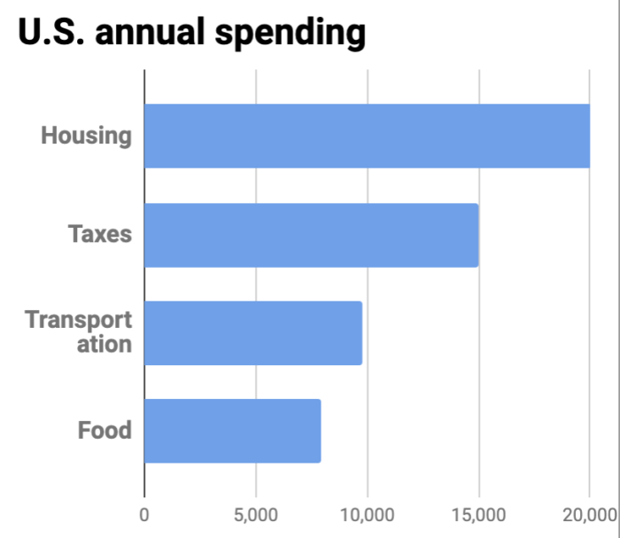

Financial freedom · Part 3
Chapter 9: Work remotely
Working remotely cuts your expenses, increases your income, and lets you travel the world
If you work remotely, the world is your oyster.
Many of the strategies we've covered so far—house-sitting, traveling somewhere cheaper, qualifying for the Foreign Earned Income Exclusion, and moving to a state without income tax—are easier to implement when you work remotely.
Plus, it's the only strategy that can both reduce your expenses and increase your income. This powerful one-two punch has helped me, and countless other nomads, enjoy a richer lifestyle while on the fast-track to financial freedom.
Who should (and shouldn't) work from home
If you are a self-starter, a go-getter, than working from home is great.
If, on the other hand, you struggle with time management, working from home will feel like one endless distraction after another. (Related: How to block distractions.)
In either case, be honest with yourself.
There are several skills that are useful in an office, but triply so when you work remotely. In no particular order, they are: the ability to focus, write clearly, and follow through.
All of the above skills are crucial and, in a way, they all contribute to most important skill of all: the ability to "get shit done." Not everyone can. In fact, I would argue that most people don't get much done—either in an office or at home. Getting shit done requires a combination of prioritizing what needs to be done, focusing on what matters most, and following through.
Focus can be difficult when you work from home. There's laundry, telemarketers, and a whole host of other fun distractions waiting to delay you. Avoid them all.
But I think anyone who worries about being able to focus is overthinking it. Lots of people struggle to focus while they're at work; being at home doesn't make a lick of difference.
Plus, working remotely allows you to easily shift from working to not working. There's no longer the dreaded "pretend to work" posture we've all assumed.
Look, everyone—everyone—slacks off at a job at some point. It's inevitable. but when you work from home, you don't need to worry about pretending to work—you simply get away from the computer, go for a walk, read a book, or enjoy a leisurely lunch with a (gasp!) glass of wine.
Why: The surprising benefits of working remotely
You slash the "big 3" expenses
If you're like most people, your three biggest expenses are housing, taxes, and transportation.

Let's look at how working remotely saves you big-time in each of these three categories:
Transportation
No more paying for the privilege of commuting. Gas is expensive. So is car maintenance. And that's not even including money spent on clothes, work lunches, and a host of other BS stuff that comes with office work.
Taxes
This one's interesting. When you work remotely, your home becomes an office—and a tax deduction. You can write off part of your living space so long as you work there. Pretty sweet, huh?
Plus, the Foreign Earned Income Exclusion provides a sweet, sweet tax break for US citizens. (If you're not from the US: congratulations. Your country has a much more sensible approach to tax-planning.)
Housing
People confuse "work remotely" with "work from home". While you can certainly work from home—and enjoy the savings from reduced transportation and taxes—you'll do even better by moving somewhere cheaper. You can save big bucks moving from expensive, job-rich cities to cheaper, job-poor areas.
Look, there are lots of delightful places that are job-poor. That's not a bad thing. Tropical islands, mountain villages... hell, even small towns don't have a thriving job market—which is why they're cheaper.
So, yes, you can save money by living elsewhere. In Southeast Asia you can enjoy delicious restaurant meals for less than five dollars. THAT'S LESS THAN McDONALD'S, HOMEY!
Enjoy an extra hour per day (and increase your hourly pay) by working remotely
Your commute is gone. According to the U.S. Census Bureau, the average one-way commute is 26.1 minutes. By working remotely full-time (i.e. 5 days a week,) the average commuter will save 4.35 hours per week—or nearly nine days a year.
Imagine an extra hour, every day, to do as you wish. You could:
- Go for a walk/run/hike
- Meditate
- Have lunch with friend
- Work on a side project
- Write/paint/make music
- Go to yoga
- Plus a whole lot more
(Keep in mind: this doesn't factor in your lunch break at work. I don't know about you but a lunch break at work is not nearly as fun as a lunch break at home, or on an island in Thailand.)
In addition to the extra time, you've also increased your hourly pay at work. For example, let's say you make $50,000 a year, and work a standard 40 hours per week. 40*52=2080 hours work. So, $50,000 / 2080 = $24.03 per hour.
But when you add the extra 4.35 hours from a weekly commute, your hours increase 2,262 and your hourly pay drops to $22.10.
Put another way: by skipping the commute, you gain an extra hour per day and increase your hourly pay by 8.7%.
How to experience less stress than fighter pilots at war
Get this: Employees working from home experience 25 percent less stress—and enjoy a better work-life balance—than those who didn't work from home, according to a 2011 study from Staples. The biggest reason may be their commute.
According to a study funded by Hewlett-Packard, commuters can experience greater stress than cops facing a riot or fighter pilots at war. While this sounds impossible at first, the reason why is compelling: both the police and pilot are in relative control, whereas the poor commuter has no choice but to sit, simmer, and seethe.
Look great naked
In the same Staples study (listed above), researchers also found that those who worked from home ate healthier!
Remember that extra hour you got when you ditched your commute? Put it towards a walk, the gym, or (in my case) shooting hoops.
Enjoy more time with loved ones
Got kids? Working remotely gives you more time with them. Got a partner? You can meet them for lunch anytime (or have dinner ready when they get home). When you work from home, it's easier to reach out to people you care about, even if they've got traditional jobs.
You don't need to work from "home"—you can live and work almost anywhere
Here's the thing about remote positions: you're no longer tied to place. You're free to work anywhere—but equally important, you can apply to jobs anywhere. For example, I'm from the San Francisco Bay Area, but I've lived on a tropical island in the Caribbean while working for a company in Florida, and advised companies in New York, Seattle, and London, while living in Buenos Aires, Santiago, and Morocco. You can do the same.
Would you prefer to apply to jobs only in your hometown, or join the best and brightest around the world? The answer for many is a simple one. And the same reason works for employers, too: companies now realize that hiring remote employess lets them recruit the best in the world, not the best in their town.
Admittedly, employers should realize this. Some don't. So if you'd like to transition your current job to a remote position, keep reading.
How to convince your boss to work remotely
Similar to asking your boss for a raise, you'll need to (i) do your homework, (ii) plan your ask, and (iii) be ready to negotiate.
Stun your boss with these 3 facts about remote work
- It boosts productivity. According to a Stanford study, working from home increases productivity equal to an extra day per week. (Source.)
- It reduces costs. With fewer people in the office, employers can reduce or eliminate overhead costs such as real estate and operating expenses. The average savings? $11,000 a year per remote worker. (Source.)
- It's like giving you a raise—without writing a check. The average remote worker saves about $7,000 a year (which is mainly from commuting, food, clothing, and child care). (Source.) So, by letting you work remotely, your employer is, in effect, paying you more.
Use this 3-step formula to ask your boss to work remotely
For most difficult discussions, I use a simple 3-part approach. I call it “Past/Present/Future.” (We originally covered this approach here.) In any tough talk you simply explain (i) what happened (Past), (ii) what’s happening (Present), and (iii) what will happen next (Future).
Step 1: Past
In this step you need to highlight what you were hired to do, and why working in the office was a great idea.
Step 2: Present
In this step you transition from why working in the office was a great idea, but now things have changed. This is a great time to highlight some struggles your may be having, such as staying focused with all the distractions from the office, or time away from your kids, or your desire to no longer wear pants to work.
Step 3: Future
Now you ask for a change going forward.
I recommend you ask to work remotely full-time. If it works, great; if it doesn't, negotiate 1–2 days per week as a trial. Then, when your boss realizes how badass you are when you're not distracted at the office, you can transition to full-time.
Address your employer's concerns with these templates
Now that you've asked, your boss will likely need to time to either think it over, check with HR (shudder) or do other manager-y things.
This is perfectly fine. I suggest giving them a week to mull it over; if you haven't heard back, email them a quick message, like this:
Hi [BOSS NAME],
Have you had a chance to look into my request to work from home?
Let me know if you have any questions or concerns.
Cheers,
NAME
Keep it short and sweet. Anything longer is filler, and comes across as pleading. You’ve already make your case; now, your employer owes you a response. So keep it short.
Common work-from-home jobs (and where to find them)
The following fields are common:
- Development
- Marketing
- Management
- System Administration
- Design
- Sales
- Writing
- Customer Success
- Consulting
- Finance
- Administration
- Human Resources
- Education
- Health Care
- Legal
Here's a list of places to find remote work:
- FlexJobs has a list of remote and freelance positions.
- WFH.io
- RemoteOK
- Jobspresso.co
- Remote.co
- Remotive
- Working Nomads
- Mike's Remote List
- There is a list of additional resources here.
While the list above will give you plenty of opportunities, your best bet is to simply apply to companies you already know, like, and trust. If you like what they're doing, you'll probably enjoy working for them.